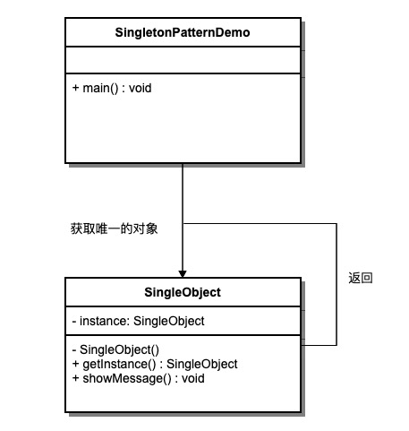

Singleton Pattern
Singleton Pattern is one of the simplest design patterns in Java. This type of design pattern belongs to creational patterns, and it provides an optimal way to create objects.
This pattern involves a single class that is responsible for creating its own object while ensuring that only a single object is created. This class provides a way to access its unique object directly, without needing to instantiate an object of the class.
The singleton pattern is a creational design pattern that ensures a class has only one instance and provides a global access point to access that instance.
Note:
- 1. A singleton class can only have one instance.
- 2. The singleton class must create its own unique instance.
- 3. The singleton class must provide this instance to all other objects.
summary
Singleton Pattern
intent
Ensure that a class has only one instance, and provide a global access point to access that instance.
Mainly Solves
The problem of frequently creating and destroying globally used class instances.
When to Use
When there is a need to control the number of instances and save system resources.
How to Solve
Check whether the singleton already exists in the system; if it exists, return that instance; if it does not exist, create a new instance.
Key code
The constructor is private.
Application example
- A class has only one class teacher.
- When Windows operates on files in a multi-process, multi-threaded environment, to avoid multiple processes or threads operating on one file at the same time, it needs to be handled through a unique instance.
- The device manager is designed as a singleton pattern. For example, if a computer has two printers, it avoids printing the same file simultaneously.
Advantages
- There is only one instance in memory, reducing memory overhead, especially when instances are frequently created and destroyed (such as managing the homepage page cache of a management school).
- Avoid multiple occupation of resources (such as file write operations).
Disadvantages
- No interface, cannot be inherited.
- It conflicts with the Single Responsibility Principle; a class should only care about its internal logic, not the way it is instantiated.
Use Case
- Generate unique serial numbers.
- A counter in WEB development, avoiding the count being incremented in the database on every refresh; instead, it is cached first.
- Creating objects that consume too many resources, such as I/O and database connections.
Notes
- Thread Safety：
getInstance()Synchronization locks need to be used in the method.synchronized (Singleton.class)To prevent multiple threads from entering at the same time causing the instance to be created multiple times. - Lazy initialization: The instance is created on the first call
getInstance()to the method. - Serialization and deserialization.: Override
readResolveMethod to ensure that no new instance is created during deserialization. - Reflection Attack: Add guard code in the constructor to prevent creating new instances through reflection.
- Class loader issue: Be aware of the multiple instance problems that can be caused by complex class loading environments.
Structure
The singleton pattern includes the following main roles:
- Singleton class: a class that contains the singleton instance, usually declaring the constructor as private.
- Static member variable: a static member variable used to store the singleton instance.
- Instance retrieval method: a static method used to retrieve the singleton instance.
- Private constructor: prevents external code from directly instantiating the singleton class.
- Thread safety handling: ensures that the creation of the singleton instance is safe in a multi-threaded environment.
Implementation
We will create anSingleObjectclass.SingleObjectThe class has its private constructor and its own static instance.
SingleObjectThe class provides a static method for the outside world to obtain its static instance.SingletonPatternDemoClass usageSingleObjectclass to getSingleObjectObject.

Step 1
Create a Singleton class.
SingleObject.java
Step 2
Obtain the unique object from the singleton class.
SingletonPatternDemo.java
Step 3
execution program, output result:
Hello World!
Several implementation approaches for the singleton pattern
There are multiple ways to implement the singleton pattern, as shown below:
1. Lazy mode, thread-unsafe
Whether Lazy initialization:Yes
Is it multithread-safe:no
Implementation difficulty:easy
Description:This is the most basic implementation. The biggest problem with this implementation is that it does not support multithreading. Because there is no synchronized lock, strictly speaking, it is not a singleton pattern.
This approach has obvious lazy loading, does not require thread safety, and cannot work properly in multithreading.
Example
The several implementation methods introduced next all support multithreading, but there are differences in performance.
2. Lazy mode, thread-safe
Whether Lazy initialization:Yes
Is it multithread-safe:Yes
Implementation difficulty:easy
Description:This approach has good lazy loading and can work well in multithreading, but its efficiency is very low, and synchronization is not needed in 99% of cases.
Advantages: initialized only on first call, avoiding memory waste.
Disadvantages: synchronized must be added to ensure singleton behavior, but locking affects efficiency.
The performance of getInstance() is not critical to the application (this method is not used frequently).
Example
3. Eager initialization
Whether Lazy initialization:no
Is it multithread-safe:Yes
Implementation difficulty:easy
Description:This approach is relatively common, but it can easily produce garbage objects.
Advantages: no locking, execution efficiency is improved.
Disadvantages: initialized at class loading time, wasting memory.
It avoids multithreading synchronization issues based on the classloader mechanism. However, the instance is instantiated when the class is loaded. Although there are many reasons that cause the class to be loaded, in the singleton pattern most of them are calls to the getInstance method, but it cannot be confirmed that there are no other ways (or other static methods) that cause the class to be loaded. In that case, initializing the instance obviously does not achieve the effect of lazy loading.
Example
4. Double-checked locking / double-checked locking (DCL, i.e., double-checked locking)
JDK Version:Since JDK 1.5
Whether Lazy initialization:Yes
Is it multithread-safe:Yes
Implementation difficulty:More complex
Description:This approach uses a double-lock mechanism, which is safe and maintains high performance in multithreading.
The performance of getInstance() is critical to the application.
Example
5. Registry/Static Inner Class
Whether Lazy initialization:Yes
Is it multithread-safe:Yes
Implementation difficulty:Average
Description:This approach can achieve the same effect as double-checked locking, but it is simpler to implement. For lazy initialization of static fields, this approach should be used instead of double-checked locking. This approach only applies to static fields; double-checked locking can be used when instance fields require lazy initialization.
This approach also uses the classloader mechanism to ensure that only one thread initializes the instance. It differs from approach 3 in that: in approach 3, as long as the Singleton class is loaded, the instance will be instantiated (without achieving lazy loading), whereas in this approach, after the Singleton class is loaded, the instance is not necessarily initialized. Because the SingletonHolder class is not actively used, it is only when the getInstance method is explicitly called that the SingletonHolder class is explicitly loaded, thereby instantiating the instance. Imagine that if instantiating the instance consumes a lot of resources, you may want it to be lazily loaded. On the other hand, you may not want it to be instantiated when the Singleton class is loaded, because there is no guarantee that the Singleton class will not be actively used and loaded elsewhere. In that case, instantiating the instance at that time is obviously inappropriate. At this point, this approach is much more reasonable than approach 3.
Example
6. Enumeration
JDK Version:Since JDK 1.5
Whether Lazy initialization:no
Is it multithread-safe:Yes
Implementation difficulty:easy
Description:This implementation approach has not been widely adopted, but it is the best method for implementing the singleton pattern. It is more concise, automatically supports the serialization mechanism, and absolutely prevents multiple instantiation.
This approach is advocated by Josh Bloch, the author of Effective Java. It not only avoids multithreading synchronization issues, but also automatically supports the serialization mechanism, prevents deserialization from re-creating new objects, and absolutely prevents multiple instantiation. However, since the enum feature was only added after JDK 1.5, writing it this way inevitably feels unfamiliar, and it is rarely used in actual work.
It cannot call the private constructor through a reflection attack.
Example
From experience:In general, it is not recommended to use the 1st and 2nd lazy approaches; the 3rd eager approach is recommended. Only when lazy loading needs to be explicitly implemented should the 5th registration approach be used. If deserialization is involved in creating objects, you can try the 6th enum approach. If there are other special requirements, you can consider the 4th double-checked locking approach.
other extensions